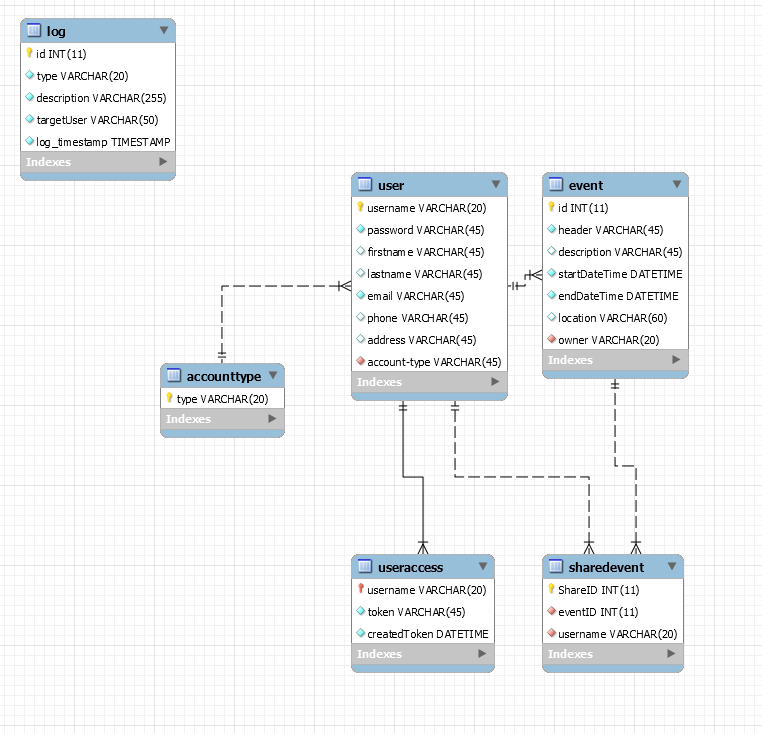

Tämä työ on webohjelmointi(ttms0500) ja webpalvelinohjelminti(ttms0900) kursseja varten tehty yhdistelmä harjoitustyö. Työ esiteltiin 30.11.2016 ja palautettiin opettajalle 6.12.2016
Harjoitustyön tehtävänä oli luoda php ja javascript-ohjelmointikielillä valitusta aiheesta toimiva sovellus, jonka avulla voitaisiin demonstroida opiskelijoiden taitoja kursilla opituista taidoista.
Me valitsimme projektin aiheeksi eräänlaisen kalenterisovelluksen kehittämisen. Kalenteriin käyttäjä pystyy luomaan oman tunnuksensa ja luomaan itselleen tapahtumia, jotka sitten näytettäisiin javascriptillä generoidussa kalenterissa käyttäjälle. Käyttäjä voisi sitten halutessaan muokata tapahtumia tai omia tietojaan, jakaa luomiaan tapahtumia muille rekisteröityneille käyttäjille.
Sivuston toimintojen käyttämiseksi loimme REST-rajapintaa, jonka avulla voitaisiin kalenterin toimintoja käyttää ja mahdollisesti tulevaisuudessa kehittää käytettäväksi muiden sovellusten avulla.
Taulu, johon kirjataan sisään/uloskirjautumiset, tapahtumien ja käyttäjien lisäykset, muokkaukset, poistot. targetUser määrittää keneen loki vaikuttaa.
eventEvent-taulu sisältää kaikki käyttäjien luomat tapahtumat. Foreing key omistajan ja käyttäjän käyttäjätunnuksen kanssa.
userSisältää kaikki käyttäjän profiili tiedot. "Tunnuksen tyyppi"-kenttää ei ole käytetty projektissa.
useraccessUserAccess-taulun tietoja käytetään sivuston sisäänkirjautumisen yhteydessä. Jos käyttäjä on kirjautunut sisään, tämä taulu sisältää käyttäjän "avaimen" ja avaimen luontiajan. Avaimen avulla käyttäjä pystyy käyttämään palvelua.
accounttypeMäärittää käyttäjätunnuksen oikeudet järjestelmään. Oletuksena on kaksi tyyppiä "Default" ja "Admin". Tämän taulun tietoje ei olla käytetty projektissa.
sharedeventMäärittää tapahtumia, joille käyttäjällä on oikeus, vaikka käyttäjä itse ei tapahtumaa ole luonut. Taulu sisältää tapahtuman id:n, jota jaetaan ja käyttäjä jolle tapahtuma jaetaan,
Javascriptiä harjoitustyössä pääsääntöisesti käytettiin kalenterin generoimiseen ja input-elementtien tietojen varmistamiseen. "CreateEvent.php"ja "EditEvent.php" käyttävät javascript/CreateEvent.js scriptejä tapahtuman tietojen varmentamiseen.
Tapahtumia luodessa tai muokatessa javascriptillä haetaan googlen map apia käyttäen kartta, joka näyttää käyttäjän määrittämän sijainnin. Lisäksi ajaxilla varmistetaan ettei tapahtuman otsikko ole jo määriteltynä ja ajaxilla haetaan mahdollisia käyttäjiä, joille tapahtuma voitaisiin jakaa.
Kalenterin luomiseksi käytimme React JS ympäristöä. Kalenteri tarkistaa joka 30s onko uusia tapahtumia määriteltynä. Voi selailla eri kuukauksien tapahtumia navigointipainikkeiden avulla.